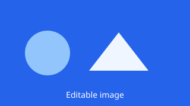

This page demonstrates every inline-editing marker and its variants. It is intentionally not linked from the navigation and can stay in production as a reference for editors.
A single-line marker is intended for headings and short labels.
A rich-text block supports bold, italic, links, lists and embedded videos. The whole block is edited in one place.
Embedded video example:

The last image is already wrapped in an explicit link. Replacing it keeps that link; without one, the gallery marker creates a full-size link automatically.
The four lists use the same block template but different insertion positions.
New blocks are inserted at the top.
New blocks are inserted at the bottom.
An add button appears before every block and after the last one.
Use this position when order matters less than placing a block next to another one.
This block can be reordered with the grip handle.
Drag a block to change its order.